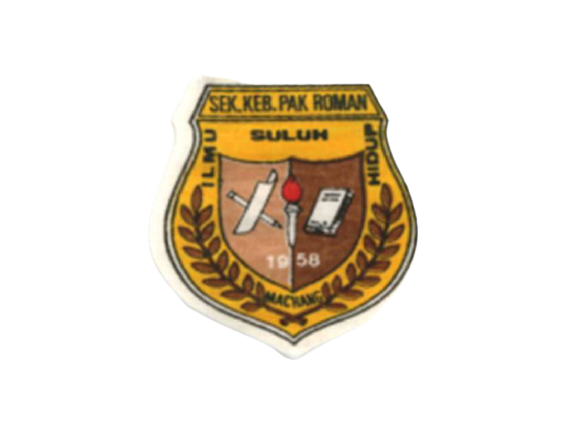
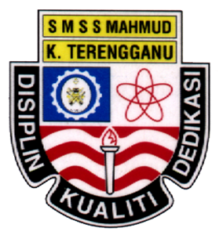

ARIANA'S EDUCATION

Sekolah Kebangsaan Pak Roman was my primary school.
It was located in a small village called Kampung Pak Roman in Machang Kelantan.
I am studying in this school started from my pre-school(2006) until standard 6 (2012).
When i was in standard 6, I have been required to sit for Ujian Penilaian
Sekolah Rendah (UPSR) and have obtained 5A's.

After UPSR, I was given the opportunity to attend a boarding school,
Sekolah Menengah Sains Sultan Mahmud or better known as SESMA that is
located in Kuala Nerus, Terengganu. I have been studying here for 5 years
from form 1 (2013) to form 5 (2017). While attending school here,
I managed to sit for the Ujian Pentaksiran Tingkatan 3 (PT3) by getting 9A 1B.
Then i take the pure science course for my upper form and managed to sit for
Sijil Pelajaran Malaysia by getting 5A's.

After SPM, i decided to apply for Information Management program at MARA University
of Technology (UiTM) and thankfully i got it at the nearest branch from where i live which
is UiTM Machang Kelantan. This programme is designed to produce professionals who are conversant
in the delivery of knowledge services in organisations and have the skills to manage information
in a digitised format. Your learning experiences will include among others, the organization of information,
librarianship skills, database fundamentals, management of information resources including electronic and digital
resources, and developing your information literacy. Before entering the University, i have no idea what programme
is this. But, i managed to get a good result for the every semester.